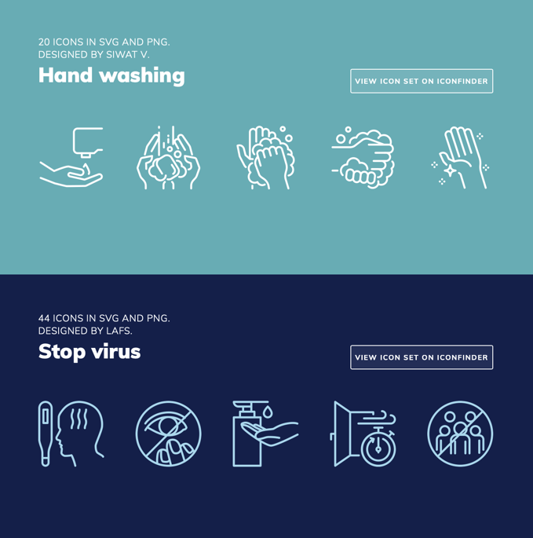
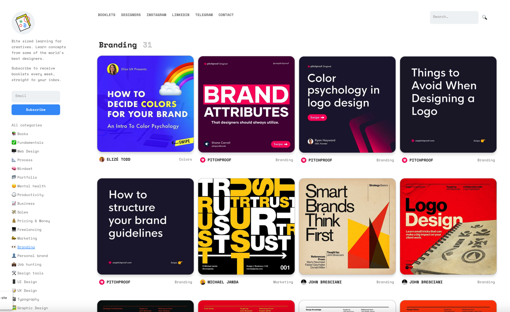
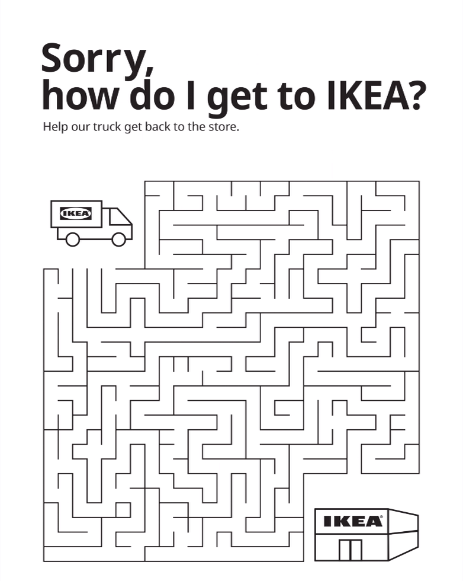
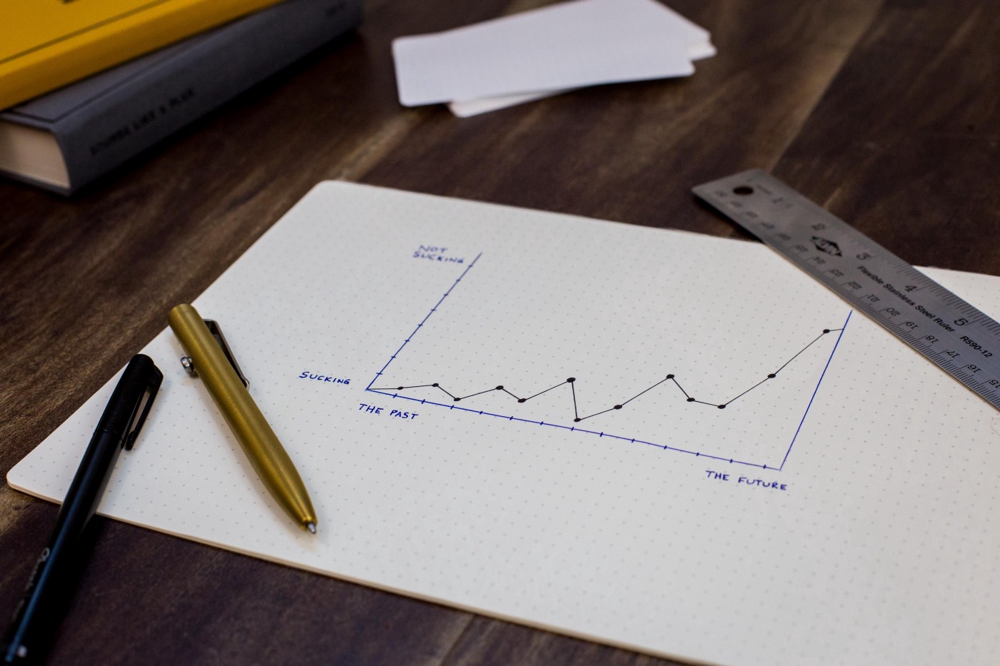

设计周刊 Design Weekly #02
Thu, Apr 9, 2020
🏷 设计资源：
300 多个关于防范冠状病毒的免费图标
号称拥有140w 丰富图标素材的 iconfinder，最近推出了 300 个有关防范冠状病毒的免费图标，包含 svg、png 两种格式可以免费用于海报、传单等设计中。

🏷 网页推荐：
快速学习新技能的小册子们-Booklets
Booklets 是一个集产品、设计、UI/UX、品牌、营销等各个领域的学习平台，你在这里可以浏览数百本小册子，快速学习新的知识。

🏷 设计新闻：
宜家这本说明书，够你玩儿一天
以色列的宜家新出了一本全新的说明书，搜罗了各种纸上游戏，用大家熟悉的“宜家说明书画风”重新演绎了一番。顺便勾起了大家儿时的回忆~

🏷 设计文章
很重要但容易被忽视的设计技巧—批判性复盘
每一个结果都是由两个变量来决定的。第一个是你所做决定的质量，第二个是运气。我们无法控制后者，所以，如果我们想加速成长，对前者的关键性回溯是必要的。
如何培养复盘意识？从你上一次做的项目开始，从你第一次做设计方案的时候开始，回溯你做的每一个决定。
- 你为什么要做这个？是什么影响了你做这个决策？
- 这个决策对项目的整体结果有什么影响？你知道它是如何做到的吗？

🏷 设计工具
Parametric Color Mixer v 0.2-色彩混合器
Parametric Color Mixer 参数化色彩混合器，是 一款受音频参数化均衡器启发的调色板合成器。你可以创建一个基础色过渡，并在不同的混合模式下，以科学的精确的方式进行颜色混合。鼠标操作不太顺畅，但视觉效果非常细腻。